başlangıç ekranı
Karolar bir liste değil, bir pano: sürüklenir, boyutlanır, üst üste bırakılınca klasör olur, kendi kendine döner.
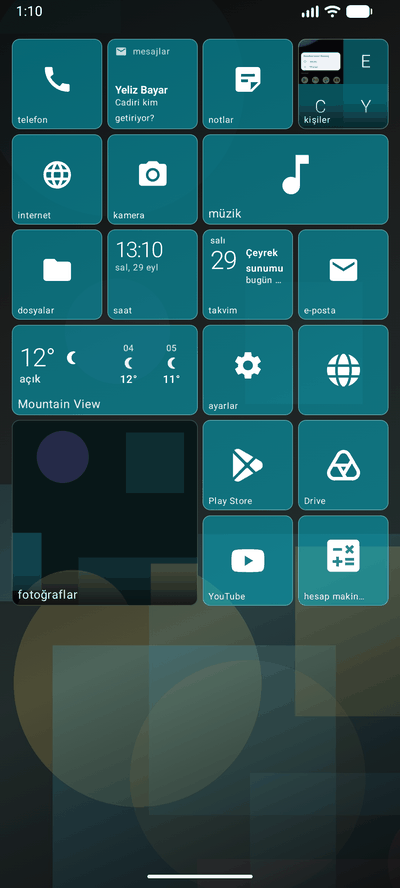
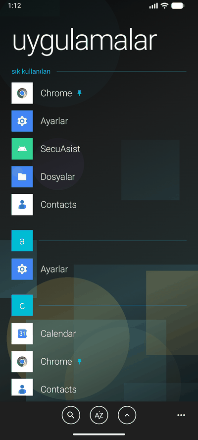
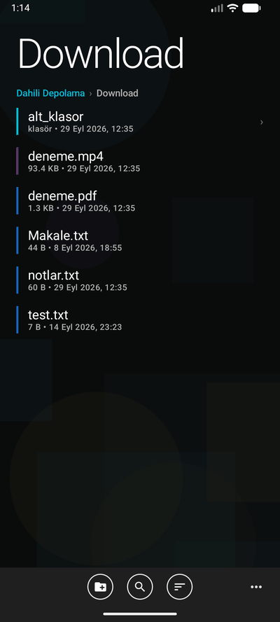
On dört vurgu rengi ve bir özel renk. Dokun; bu sayfa da başlatıcı gibi rengini değiştirir.
hub'lar
Windows Phone'un fikri buydu: uygulamalar değil, işler. Hepsi uygulamanın içinde, hepsi aynı dilde yazılmış. Karolara dokun.
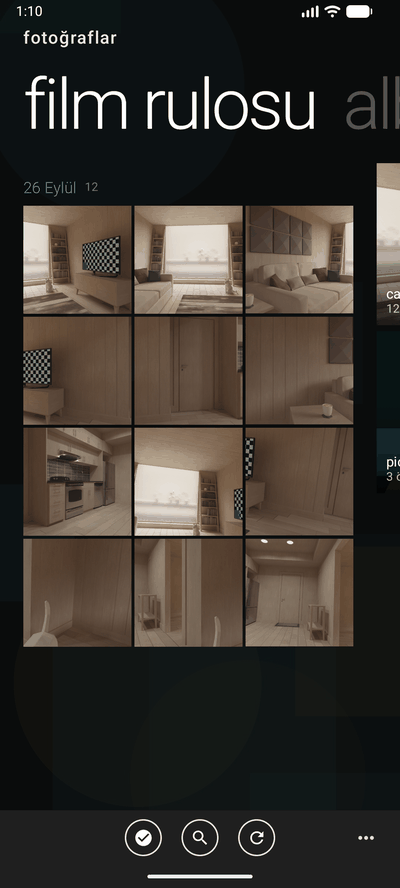
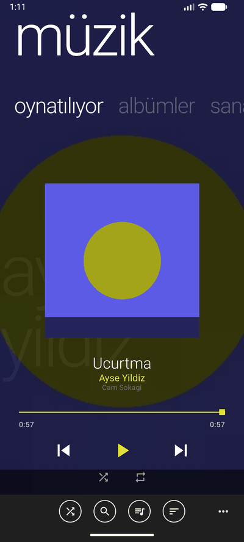
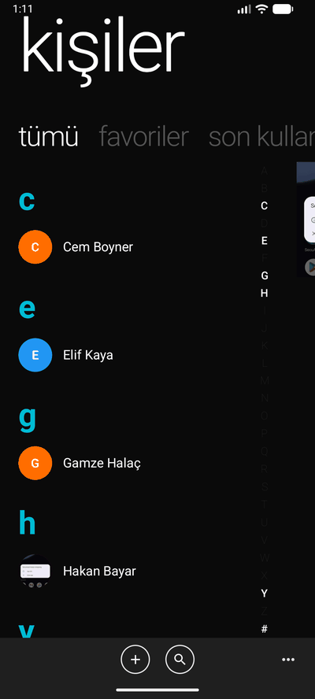
hareket
Metro'nun yarısı yazı, yarısı hareketti. Her geçiş, ekranda bir yerden bir yere giden gerçek bir şeydir.
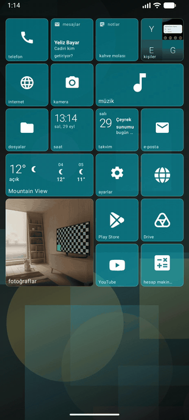
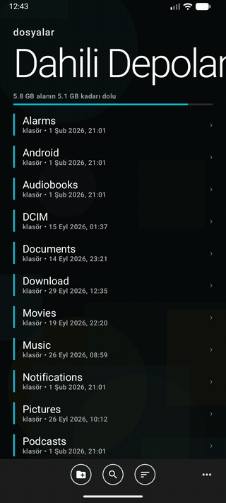
tablette
Geniş ekranda başlangıç, Windows 8'in başlangıcıdır: tam ekran, gruplu karolar, yana doğru akan bir pano. Uygulama listesi onun altında durur.
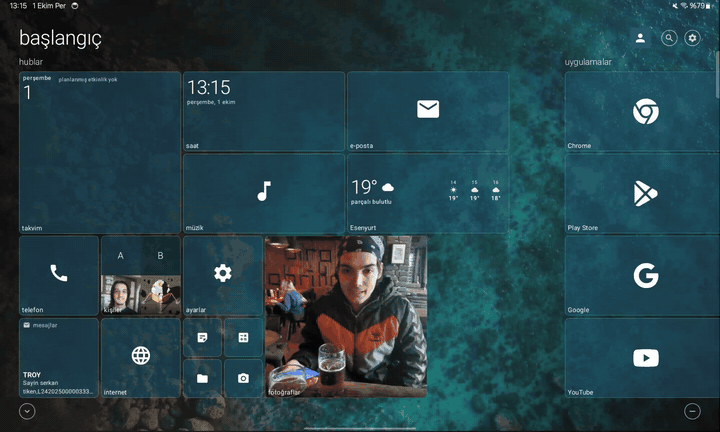
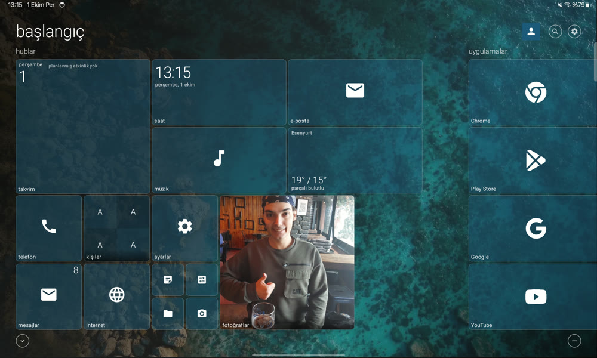
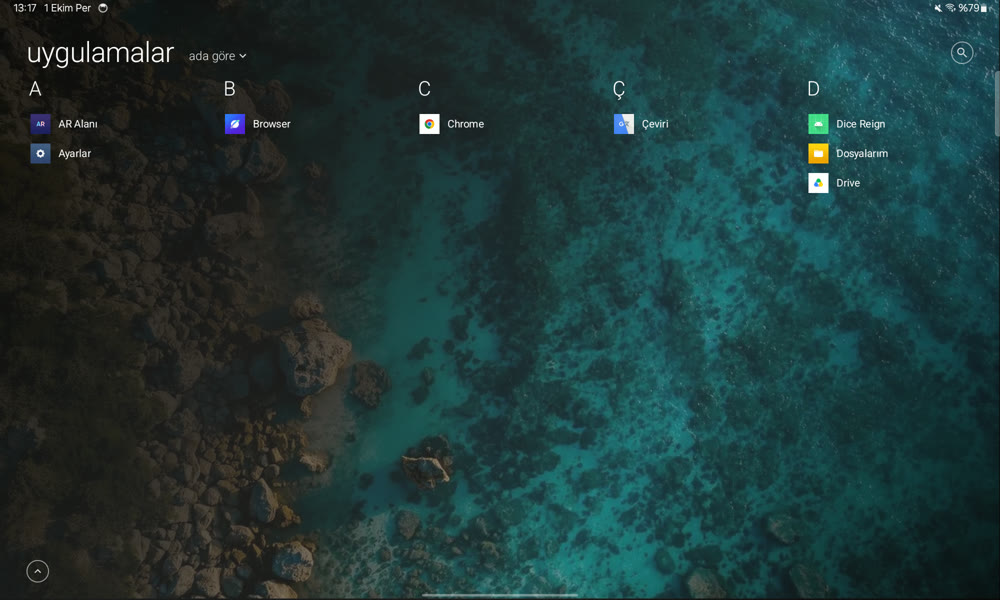
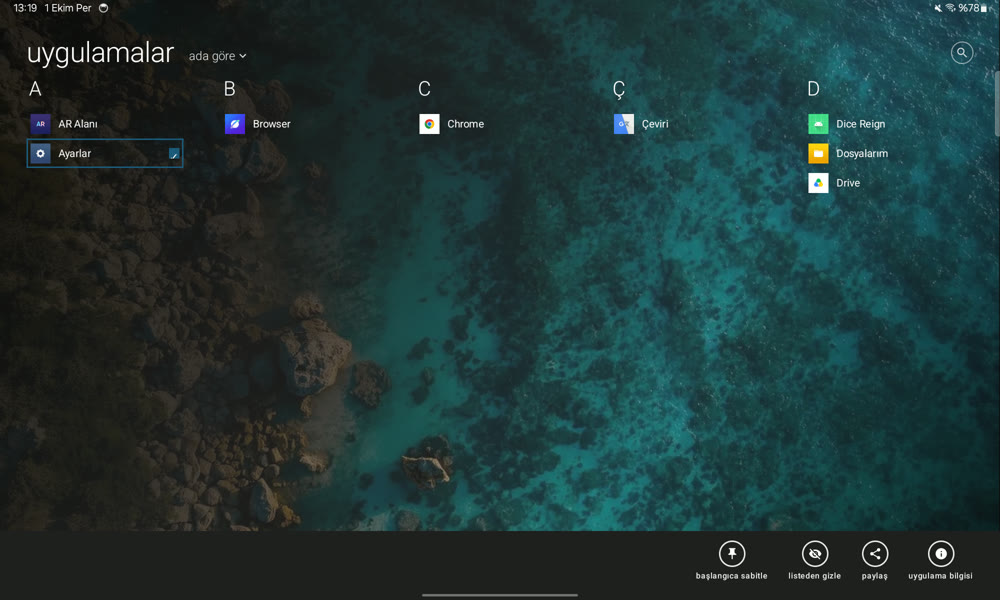
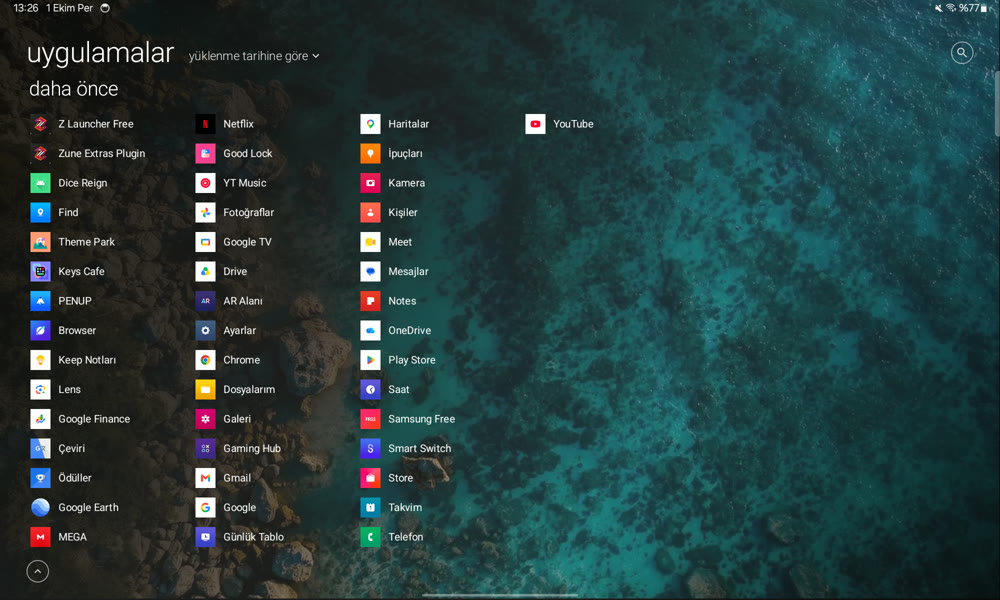
kişisel
Windows Phone tek renkti; burası senin. Pano da, tek bir karo da.
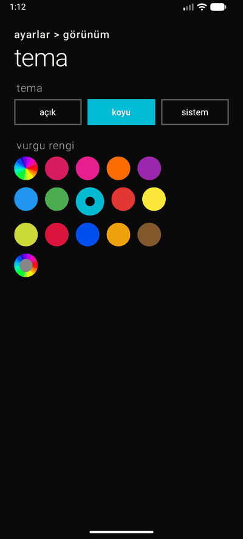
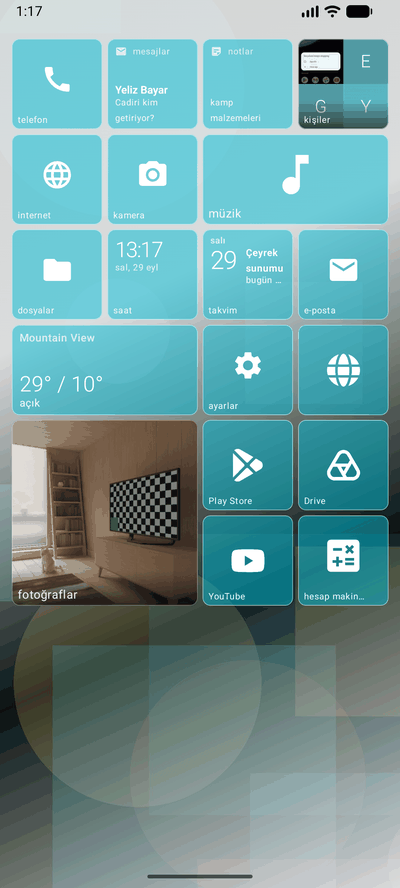
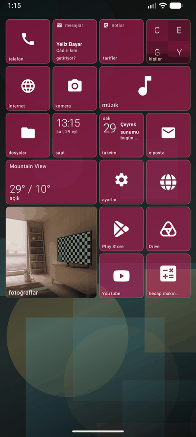
gizlilik
Sunucu yok. Reklam yok, analiz yok, kullanıcı hesabı yok. Kişilerin, mesajların ve fotoğrafların telefonda kalır.
Telefondan yalnızca hava durumu, şarkı sözü ve arama önerisi istekleri çıkar — o da o özelliği kullandığında ve kimliğin eklenmeden.
E-posta şifreleri ve kilitli notlar cihazda şifrelenir.
kaynak
Kotlin ve Jetpack Compose. Arayüzün tamamı Compose; XML düzen yok, WebView yok.
Derlemek için Android Studio'nun güncel sürümü ve JDK 17 yeter. İki ürün çeşidi var: free ve premium (Pro). Kod aynıdır; Pro, vurgu renklerinin tamamını, özel duvar kağıdını, sosyal hub'ı ve klavyeyi açar.
git clone https://github.com/serkantkn/Z-Launcher.git cd Z-Launcher ./gradlew assembleFreeDebug ./gradlew testFreeDebugUnitTest
Lisans. Kaynak görülsün, okunsun, öğrenilsin diye açık; değiştirilip dağıtılması, başka bir yazılımda kullanılması ve gelir elde edilmesi yazılı izne bağlı. Tam metin: LICENSE.
Karo glifleri Microsoft'un Fluent UI System Icons setinden (MIT). Hava durumu Open-Meteo'dan; şarkı sözleri ve arama önerileri için de tek istek, kimliksiz.
app/src/main/java/com/serkantkn/zunelauncher/
data/ model · DataStore · depolar (kişiler, medya, müzik, takvim, bulut, hava)
ui/screens/ her hub kendi ekranı ve ViewModel'iyle: home, phone, messaging, people, pictures, music, browser, email, notes, files, social, clock, calendar, weather, calculator, camera, settings, apps
ui/components/ karolar (W10M*), diyaloglar, pivot, panorama, klavye
ui/animation/ turnike, menteşe, başlık zıplaması, eğilme
app/src/test/ birim testleri: karo paketleme, dosya sıralama, karo görünümü, klavye düzenleri…